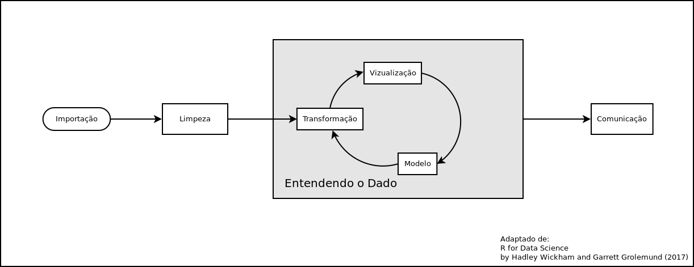

3 Importando e arrumando dados
3.1 O universo tidy: tidyverse

O tidyverse revolucionou como os cientistas de dados trabalham usando o R. Ele promove uma filosofia de programação clara, consistente e fácil de aprender, o que o tornou extremamente popular e influente no ecossistema do R e na ciência de dados.
O tidyverse não é um único pacote, mas sim um metapacote, ou seja, uma coleção de pacotes que compartilham uma filosofia comum, formando um framework completo para a ciência de dados em R construído sobre três pilares essenciais:
- a filosofia dos dados arrumados,
- o poder da programação funcional e
- a clareza do operador pipe.
3.1.1 A filosofia dos dados arrumados (tidy data)
No coração do tidyverse está o conceito de tidy data, que defende uma estrutura de dados consistente e universal:
- Cada variável deve ter sua própria coluna.
- Cada observação (ou caso) deve ter sua própria linha.
- Cada unidade de medida deve ter sua própria tabela. (Se você tem dados sobre diferentes tipos de coisas, essas coisas deveriam estar em tabelas separadas.)
Ao organizar os dados dessa forma, o tidyverse garante que todas as suas ferramentas funcionem perfeitamente juntas, simplificando tarefas de manipulação e análise que seriam complexas de outra forma.
3.1.2 O poder da programação funcional
O tidyverse faz uso extensivo de funções que executam uma única tarefa bem definida. Essa abordagem, conhecida como programação funcional, promove a reutilização do código e o torna mais fácil de ler e entender. Em vez de escrever loops complexos, você pode usar funções concisas para aplicar operações a grupos de dados, o que torna seu código mais robusto e menos propenso a erros.
3.1.3 A clareza do operador pipe (%>% ou |> no R 4.1+)
O operador pipe é o que realmente torna o código tidyverse tão intuitivo. Ele permite que você encaminhe o resultado de uma função diretamente para a próxima, criando uma sequência lógica de operações. Isso melhora drasticamente a legibilidade e a manutenção do seu código.
dados |> # Começa com o objeto 'dados'
select(coluna1, coluna2) |> # Usa select() para manter apenas as variáveis coluna1 e coluna2
filter(coluna1 == 'exemplo') # Depois, usa filter() para manter apenas as linhas onde coluna1 == 'exemplo'O operador pipe pega o resultado da linha anterior e passa como primeiro argumento para a função da próxima linha. Assim:
filter(select(dados, coluna1, coluna2), coluna1 == 'exemplo')Mas com o pipe, fica mais legível e mais próximo da lógica humana: “pegue os dados → selecione colunas → filtre as linhas”.
Juntos, esses três pilares criam uma abordagem de ciência de dados que é consistente, poderosa e, acima de tudo, agradável de se trabalhar.
3.1.4 Principais pacotes do tidyverse
readr: Para importação de dados. Oreadroferece uma maneira rápida e robusta de ler arquivos de texto retangular, como CSV e TSV. Ele é mais rápido que as funções base doRe importa os dados diretamente no formato tibble, facilitando a próxima etapa de análise.tibble: Para criar (tibble()) e transformar (as_tibble()) data frames no formato tibble, um formato mais moderno, eficiente e legível. Melhora a exibição dos dados (glimpse()) e mantém tipos de dados consistentes durante operações.dplyr: Para manipulação de dados. Com ele, você pode filtrar linhas (filter()), selecionar colunas (select()), reorganizar dados (arrange()), e resumir dados (summarise()), tudo de maneira clara e legível. Ele substitui a necessidade de escrever códigos complexos e muitas vezes confusos para essas tarefas.tidyr: Para arrumar dados. Este pacote é fundamental para transformar dados “bagunçados” em “arrumados” (tidy data). Funções comopivot_wider()epivot_longer()são essenciais para remodelar tabelas de forma eficiente, uma tarefa comum e muitas vezes difícil.ggplot2: Para visualização de dados. Considerado um dos melhores pacotes de gráficos emR, oggplot2permite criar gráficos impressionantes e personalizados. Ele se baseia na “Gramática dos Gráficos”, onde você constrói seu gráfico camada por camada, dando controle total sobre cada elemento visual.purrr: Para programação funcional. Opurrrajuda a trabalhar com listas e vetores, substituindo loops for por funções mais concisas e expressivas comomap(), tornando seu código mais fácil de ler e menos propenso a erros.stringr: Para manipulação de strings. Este pacote simplifica as operações com texto, como detecção, extração e substituição de padrões.lubridate: Para manipulação de datas e horas de forma mais acessível e eficiente.forcats: Para trabalhar com variáveis categóricas (fatores).
3.1.5 Importância no ecossistema R
Simplificação da manipulação e análises de dados: o
tidyversereduziu drasticamente a complexidade da manipulação e análises de dados noR. Antes dotidyverse, muitas tarefas exigiam códigos mais longos, complexos e difíceis de entender.Melhoria da legibilidade do código: A filosofia do
tidyverseenfatiza a legibilidade do código, o que facilita a colaboração e a manutenção de projetos.Aumento da produtividade: A sintaxe clara e consistente do
tidyversepermite que os usuários realizem tarefas mais rapidamente.Ampliação da acessibilidade: O
tidyversetornou a manipulação e análise de dados emRmais acessíveis para pessoas com diferentes níveis de experiência.Influência em outras bibliotecas: A filosofia do
tidyverseinfluenciou o design de outras bibliotecasR, promovendo a consistência e a clareza.Comunidade ativa: O
tidyversepossui uma comunidade grande e ativa que oferece suporte, compartilha conhecimento e desenvolve novas ferramentas.
3.1.6 A criação do tidyverse
A criação do tidyverse foi um processo contínuo de desenvolvimento, não um evento único. Sua filosofia central sempre foi tornar a manipulação e visualização de dados mais organizada, padronizada e acessível.
O projeto foi iniciado por Hadley Wickham, que, na época, era professor adjunto de estatística na Universidade de Auckland, Nova Zelândia. Ele já estava desenvolvendo pacotes influentes como o ggplot2 para visualização e o dplyr para manipulação de dados.
Mais tarde, Wickham se juntou à empresa RStudio como Cientista chefe. O empresa RStudio posteriormente mudou de nome para Posit e se tornou o lar do tidyverse, apoiando e impulsionando seu desenvolvimento e popularidade na comunidade de R.
Vamos falar mais sobre o tidyverse e ver exemplos ao logo do curso. Algumas vezes vamos usar funções do módulo base do R, pois podem ser mais rápidas ou para ilustrar algum ponto. Lembre-se que para você usar plenamente o R não basta conhecer o tidyverse, também precisa saber usar bem o módulo base!
3.2 Importando dados
A importação de dados é um dos primeiros e mais cruciais passos em qualquer projeto de Ciência de Dados. A qualidade e a eficiência desse processo impactam diretamente a qualidade da análise e dos resultados. Aqui vamos falar da importação de dados, cobrindo principais formatos, funções de leitura, melhores práticas e considerações e observações:
Podemos ver no diagrama abaixo (adaptado de Wickham & Grolemund, 2017), as principais etapas que veremos nesse curso e como tudo começa com a Importação dos dados.

Existem diversas maneiras de importar o dados em R. As principais são:
- Importando de arquivos locais,
- Importação via WEB (APIs, http,ftp, Scraping),
- Acesso a Banco de Dados.
Vamos olhar cada uma delas.
3.2.1 Importando de arquivos locais
Essa é a maneira que todos estão mais acostumados. Em geral se importa um arquivo texto do tipo CSV ou ainda TXT com algum tipo de delimitador, que pode ser espaço,
Comumente se utiliza a função read.table() ou alguma de suas variantes como read.csv() ou read.csv2().
Alguns exemplos:
dados <- read.csv2("planilha.csv")
# ou
dados2 <- read.table("arquivo.txt", header=F, sep=";")3.2.1.1 Benchmarks e cuidados na importação
Um rápido benchmark compara o tempo que cada uma das funções em R (em diferentes pacotes), Python e duckDB demorou para ler um arquivo CSV de 1.5 Gb contendo 3.297.660 linhas e 123 colunas.
| função | pacote | tempo | tam | status |
|---|---|---|---|---|
| read.csv | R base | 28.95s | 1.592.365 | warning |
| read_csv | pandas (python) | 21.40s | 3.254.452 | warning |
| read_csv | readr (tidyverse) | 16.34s | 3.253.190 | warning |
| vroom | vroom | 8.76s | 3.253.190 | warning |
| fread | data.table | 4.28s | — | Erro |
| read_csv | duckDB | 1.87s | 1.620.028 | warning |
Note que nenhuma das funções leu todo o arquivo! A read_csv do pandas, a read_csv do readr e a vroom do pacote de mesmo nome foram as que mais se aproximaram de ler todo o arquivo. A função read.csv do módulo base não só foi a mais lenta como leu cerca da metade do arquivo demorando quase 29 segundos, já a função read_csv do duckDB também leu apenas ~1.6 milhões de registos em menos de 2 segundos.
Observação importante:
Como vimos, nem sempre a importação ocorre da maneira que imaginamos e poucos se dão ao trabalho de ler as mensagens de aviso. o formato CSV, que é apenas um texto separado por um caractere (em geral uma “,” ou “;”), pode facilmente ser comprometido. Basta qualquer linha que tenha um desses caracteres, (por exemplo, um endereço ter um desses delimitadores e não estar entre aspas) para gerar problemas.
Ao exportar um arquivo para CSV lembre-se sempre de configurar para que os campos textos sejam incluídos entre aspas! (Nem sempre resolve, pois pode ter uma ou mais aspas soltas, o que também vai corromper o arquivo CSV).
Também algumas vezes podemos importar algum formato oriundo de outro software, como o SPSS, STATA, SAS, ou até mesmo o extinto formato DBF. No R é necessário chamar o pacote haven, parte do tidyverse, ou a foreign do R base.
No pacote haven você encontra as funções read_sas(), read_sav() e read_dta() para importar respectivamente do SAS, SPSS e STATA.
Por conta da influência dos sistemas do DATASUS na saúde, até hoje temos de lidar com um formato legado chamado DBASE que possui a extensão .DBF ou ainda .DBC (DBase compactado, formato criado pelo DATASUS).
Para importar um DBF com o pacote foreign:
library(foreign)
dados <- read.dbf("datasus.dbf", as.is=TRUE)
## as.is = TRUE não transforma as strings em fatoresJá para o DBC vamos precisar do pacote read.dbc, desenvolvido por Daniela Petruzalek. Não está disponível no CRAN (o repositório oficial do R) no momento deste curso. Por isso, para instalá-lo, você precisará seguir um procedimento alternativo. Vamos instalar do repositório no github da autora e, para isso, precisamos do pacote devtools instalado.
devtools::install_github("danicat/read.dbc")
library(read.dbc)
dados <- read.dbc("datasus.DBC", as.is=TRUE) ## DBC é um DBF mas compactado3.2.2 Importando via WEB
Uma das facilidades do R que é pouco explorada é a possibilidade de ler arquivo através da internet. Algumas das funções podem acessar diretamente e referenciar um link remoto (URL).
Veja o exemplo abaixo:
library(tidyverse)
tab <- read_csv('https://raw.githubusercontent.com/wcota/covid19br/refs/heads/master/cases-brazil-cities.csv')
head(tab)Tendo o endereço da URL, em apenas um comando podemos importar o conteúdo de uma tabela ou dados localizados numa página.
Essa página pode ser num local web usando o protocolo https, http ou, por exemplo, ftp.
paises <- read_csv('http://157.86.198.20/dados/paises.csv')Mas nem sempre é tão simples assim. A segurança na web evoluiu significativamente, e os navegadores modernos e até mesmo as ferramentas que fazem requisições HTTP estão se tornando cada vez mais rigorosas na validação de certificados SSL/TLS.
Vamos baixar uma lista de preços de medicamentos do site da ANVISA:
url <- "https://dados.anvisa.gov.br/dados/TA_PRECOS_MEDICAMENTOS.csv"
read_csv(url)Ainda é possível acessar a tabela, mas vamos precisar de um pacote chamado httr2, usado para “raspagem” (scrapper) de dados da web. Nesse pacote podemos dizer para que a autenticação seja ignorada desativando as opções (ssl_verifypeer e ssl_verifyhost). Assim, nem a conexão e nem o site serão validados.
library(httr2)
req <- request(url) |>
req_options(ssl_verifypeer = 0) |>
req_options(ssl_verifyhost = 0)o comando acima montou uma requisição “req” que vai ser executada a seguir pela função req_perform(). Somente o dado será acessado.
A função resp_status() vai nos retornar o código web resultante da operação. Caso seja 200, a operação foi realizada com sucesso. Caso a página ou a URL esteja mal formatada, teremos como resultado o código 404, também conhecido como “Página Não Encontrada”.
resposta <- req_perform(req)
resp_status(resposta) ## ou resposta$status_code
# [1] 200Recebemos o código 200, indicando que a função foi bem sucedida, mas não termina aqui ainda. É necessário extrair o dado do objeto resposta para poder importá-lo usando uma função como read_csv(). Nesse caso vamos usar read_delim().
A função resp_body_raw() é a que vai extrair os dados do objeto resposta e passar a função que vai realizar a importação. Vamos informar a função read_delim() que o delimitador é “;” e também que o code_page usados para a acentuação é o Latin-1 (o mesmo que ISO-8859-1 / Windows-1252), usado, em geral, pelo Windows. Já o Linux e o MAC utilizam UTF-8 . Assim, se o seu computador roda Linux, é preciso informar isso. Caso você use Windows, não é necessário, mas também não retorna erro se usar.
anvisa <- read_delim(file=resp_body_raw(resposta), delim = ';',
locale=locale(encoding='latin1'))
anvisa
Como podem ver, obtivemos 53436 linhas e 16 colunas.
Podemos agora perguntar, por exemplo, quantos medicamentos estão registados que usam acido acetilsalicílico nesta base.
anvisa |>
filter(str_detect(DS_SUBSTANCIA, 'acetilsalicílico')) |>
nrow()
# [1] 281Não se preocupe que vamos ver em maiores detalhes essas funções acima nas próximas aulas.
3.2.3 Acessando o feed de notícias RSS do Ministério da Saúde
Vamos acessar o RSS que é o serviço de notícias do MS. O formato dos dados está em XML.
Formatos XML e JSON.
library(xml2)
# URL do feed RSS
rss_url <- "https://www.gov.br/aids/pt-br/assuntos/noticias/site-feed/RSS"# Leia o conteúdo do XML da URL
xml_data <- read_xml(rss_url)# Defina os namespaces usados no arquivo XML
namespaces <- c(
rdf = "http://www.w3.org/1999/02/22-rdf-syntax-ns#",
d1 = "http://purl.org/rss/1.0/"
)# Encontre todos os nós <item> usando o namespace padrão
items <- xml_find_all(xml_data, "//d1:item", ns = namespaces)# Extraia os títulos de cada <item>
# O título está na tag 'title'
titulo <- xml_text(xml_find_all(items, "d1:title", ns = namespaces))# Extraia os links de cada <item>
# O link da notícia está na tag 'link'
links <- xml_text(xml_find_all(items, "d1:link", ns = namespaces))# o mesmo para o corpo
corpo <- xml_text(xml_find_all(items, "d1:description", ns = namespaces))# Crie um data frame para organizar as informações
noticias_df <- data.frame(
Titulo = titulo,
Corpo = corpo,
Link = links,
stringsAsFactors = FALSE
)print(noticias_df)por hoje é só!